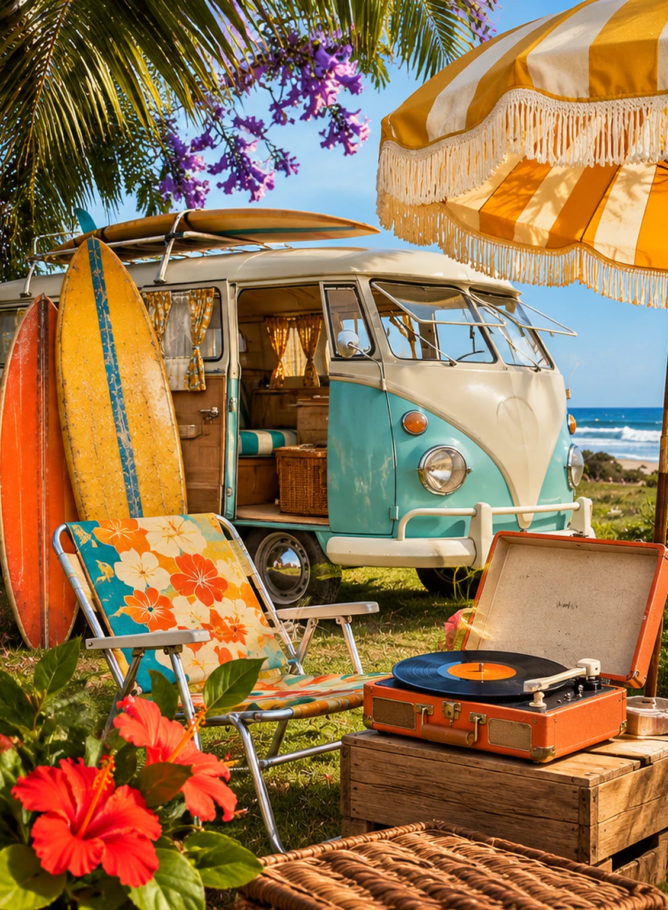

✿
’n Middelste klong.
’n Groot storie.
Somer ses-en-sestig. Jacarandas in blom. Flip en Martie se middelste klong kom op die toneel — met meer as ’n bietjie kattekwaad in sy oë.
“Met ’n vrye siel soos die wind hom waai.”’n Stoute bliksem. ’n Vrye siel.
Talent is permanent.
En die lewe is ’n lied.
Van die somer van ses-en-sestig tot vandag: ’n lag wat aansteek, ’n vrye gees en ’n hart wat altyd plek maak vir mense. Dis die storie van Flip — ’n pa, ’n broer, ’n neef en ’n vriend wat deur die lewe sy eie lied bly sing.

Sy eie stem. Sy eie woorde. En die lewensleuse wat hierdie storie saambind. Kyk na Flip se boodskap — op herhaal, net soos ’n goeie refrein.
Kyk ook op YouTube ↗Die video herhaal outomaties sonder klank. Tik hierbo om te luister.
“Talent is permanent.
”
Die lewe is ’n lied.
Die mense. Die lag. Die oomblikke. En al die stories wat hom Flip maak.
Somer ses-en-sestig. Jacarandas in blom. Flip en Martie se middelste klong kom op die toneel — met meer as ’n bietjie kattekwaad in sy oë.
“Met ’n vrye siel soos die wind hom waai.”’n Lag wat soos ’n vuur versprei, ’n mens wat graag leef, en iemand wat altyd weet hoe om die mense om hom tuis te laat voel.
PA · BROER · MAN · NEEF · VRIENDDie lewe gooi sy curve balls. Flip weet dit. Maar dis juis hoe ’n mens die mooi leer raaksien — deur die draaie, die vasbyt en die mense wat saam met jou stap.
“Dis die mooiste mooi wat wen.”’n Pa, ’n broer, ’n man. ’n Neef en ’n vriend wat altyd kan. Dis nie die jare wat ’n mens onthou nie — dis die liefde, vriendskap en stories wat bly.
’n Lewe vol liefde en vriendskap. ’n Mens wat jy altyd wil ken. ’n Storie wat nog lank nie klaar vertel is nie.
KYK WEER NA DIE HERINNERINGE